Generalization
Let us first import some libraries:
import numpy as np
%matplotlib notebook
%matplotlib inline
import matplotlib.pyplot as plt
from IPython.core.debugger import set_trace
import warnings
warnings.filterwarnings('ignore')
from sklearn import datasets, neighbors
np.random.seed(1234)
I'm sure we're getting the broad idea of ML: you want to learn about a function that maps your input to your output, where your input is represented by a set of features, and your output is a set of labels, and then your function is taking your input, has some parameters, and giving you your output:
$$x\rightarrow f(x;w)\rightarrow y$$How we can figure out the values of our parameters so that we can fit our data is to use the training set of $N$ examples of input/output observations, $\mathcal{D}=\left\{\left(x^{(n)},y^{(n)}\right)\right\}_{n=1}^N$, and we find the weights such that they minimize a cost function, which says that our function output should be close to the observed output, per instance averaged over all our training data points. For linear regression, recall our model is a linear combination of the weights $\hat{y}=f_w(x)=\mathbf{w}^{\top}\mathbf{x}\;:\;\mathbb{R}^D\rightarrow \mathbb{R}$, with our cost function being the squared loss.
The main goal of all of this is not to fit our training data, but rather how well our model generalizes to future unseen data. This idea of generalization relates to two concepts: bias and variance.
Bias says that our model is too simple, and because of that our model underfits the data and has a large error. Variance says that our model is too expressive and overfits the data. On training data, it will have a low error, but will have a large variance for future points that could come in, and thus will have a large error on the unseen test data. We saw previously that regularization was a way to help balance the trade-offs of both bias and variance. Take a look at some below examples:
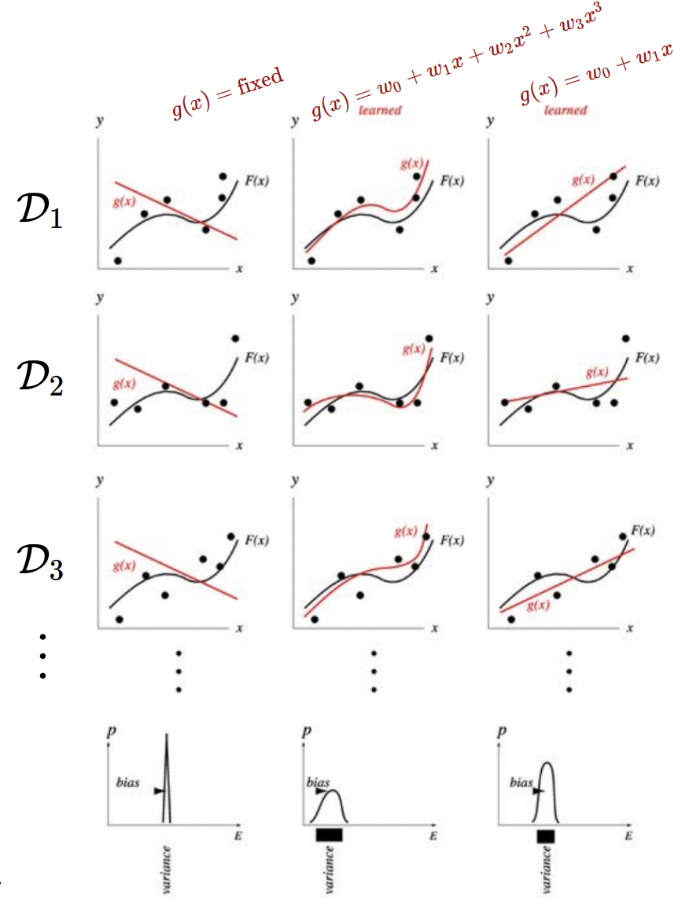Consider each row above ($\mathcal{D}_1$, $\mathcal{D}_2$, $\mathcal{D}_3$) as different training data sets, taken from true distribution $F(x)$. In each column, we fit some models of varying complexity. The model in the first column is shown to have a high bias, since the model doesn't change very appreciably for different data sets (between rows), and it has a high error due to underfitting.
The curves in middle column is shown to have a high variance. This is because, although for each row the model fits the data very well, we see that the curve shape varies a lot for each new data set (between rows), and thus may not generalize well.
Now let's try to understand how bias and variance contribute to the generalization error, and let's do this for L2 loss. Assume that we sample points from a true distribution $p(x,y)$ in the form a dataset $\mathcal{D}=\left\{\left(x^{(n)},y^{(n)}\right)\right\}_n$, and from this dataset we develop a model $\hat{f}_{\mathcal{D}}$. And so, our generalization error or expected loss will be on average, how different are our training data points is different from the prediction of our developed model, i.e $\mathbb{E}[(\hat{f}_{\mathcal{D}}-y)^2]$
Let's try to re-write this. Let $y=f(x)+\epsilon$, where $\epsilon$ represents the inherent noise in the data, and then for $\hat{f}_{\mathcal{D}}$, let's add and subtract the term $\mathbb{E}_{\mathcal{D}}[\hat{f}_{\mathcal{D}}(x)]$.
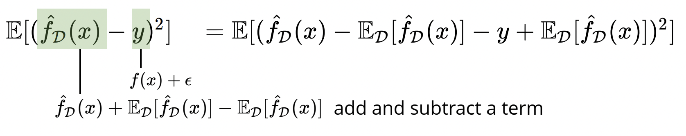And by linearity of expectation, we can end with:
$$=\color{orange}\underbrace{\mathbb{E}[(\hat{f}_{\mathcal{D}}(x)-\mathbb{E}_{\mathcal{D}}[\hat{f}_{\mathcal{D}}(x)])^2]}_{\text{Variance}}\color{black}+\color{red}\underbrace{ \mathbb{E}[(f(x)-\mathbb{E}_{\mathcal{D}}[\hat{f}_{\mathcal{D}}(x)])^2]}_{\text{Bias^2}}\color{black}+\color{green}\mathbb{E}[\epsilon^2]\color{black}$$From the above expression, we see that variance is simply the difference between the average prediction of our model and the predicted value from our model on each instance, all averaged. Bias, is similar, but measures the difference between the average prediction of our model and the value of the true model, all averaged.
To visualize graphically, suppose you have different training datasets, each with 25 data points (not shown in the graph), and each dataset you feed to a linear regression model and produces one of the red lines below in the left graph. Suppose that all datasets have points sampled from one true distribution, which is shown in the green curve on the right graph. Then, if you average out each of the red curves, you produce the smooth solid red curve on the right graph. Here, the variance refers to the spread of each of the red curves in the left graph, whereas the bias refers to the difference between the red and green curves on the right graph.
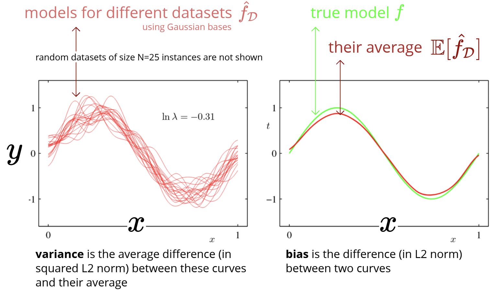As shown below, we also notice that changing the regularization coefficient will also change the variance and bias. Usually a large regularization coefficient will constrain the weights and thus result in a lower variance. However, with low variance comes high bias:
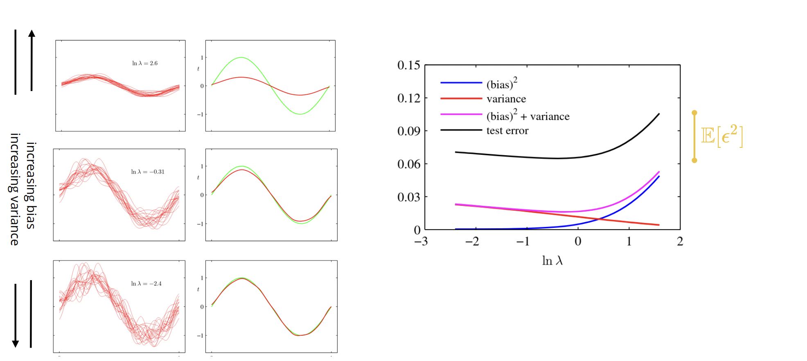And from this, it seems reasonable that we would want to select a value of $\lambda$ that will minimizes the sum of variance and bias (squared). Note the gap in our test error is due to the noise we baked into our sampled data. This is simply a vertical translation due to $\epsilon$, and should have no impact on the optimal value of $\lambda$.
Below shows the more general effect model complexity has on the prediction error. We notice that using the average training error is, in fact, not a good way to choose your hyperparameters, because for small training error, you are overfitting the data and have a very high variance, and there is a large gap between the test error and the training error. On the left extreme end, the bias is high is more simplistic models which would mean the training error will be high.
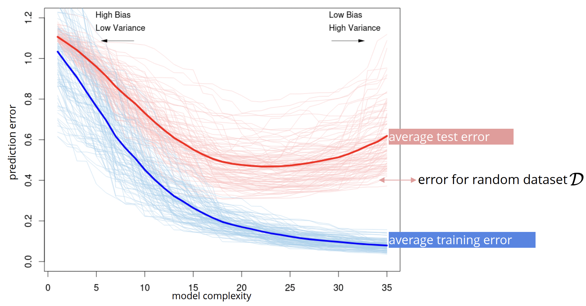Model Selection
From the above information, it seems that the best model we can have is one that strikes a balance between the bias and variance (so we don't underfit or overfit), and thus model selection is crucial. This really just boils down to selecting good values for our hyperparameters.
Let's code up a brief example to illustrate the importance of model selection. Using a California
housing dataset, let's use scikit-learn's implementation of KNN (we haven't seen
this method yet, so just go with it).
#Loading the california housing data set
x, y = datasets.fetch_california_housing(return_X_y=True)
(num_instances, num_features), num_classes = x.shape, np.max(y)+1
#define a function for the MSE loss
loss = lambda y, yh: np.mean((y-yh)**2)
n_test = num_instances // 5
inds = np.random.permutation(num_instances)
x_train, y_train = x[inds[n_test:]], y[inds[n_test:]]
x_test, y_test = x[inds[:n_test]], y[inds[:n_test]]
#Plot the mean square error for different K values stored in K_list
K_list = range(1,100)
err_train, err_test = [], []
for i, K in enumerate(K_list):
model = neighbors.KNeighborsRegressor(n_neighbors=K)
model = model.fit(x_train, y_train)
err_test.append(loss(model.predict(x_test), y_test))
err_train.append(loss(model.predict(x_train), y_train))
plt.plot(K_list, err_test, '-', label='unseen')
plt.plot(K_list, err_train, '-', label='train')
plt.legend()
plt.xlabel('hyper parameter')
plt.ylabel('mean squared error')
plt.show()
The above graph shows both extremes - on the left with overfit, as shown from the near zero training error we get, but very high test error. On the right we underfit, as the training error we get is quite high. Based on the orange training error, it is not informative as to where we should choose our hyperparameter to be. So, we look to the blue curve, the test error on the unseen data, and select the hyperparameter which minimizes this error, as shown by the star above.
This provides a good motivation to why model selection is important, but first let's start with some assumptions. Firstly, assume that the data points we train our model on are sampled from some true distribution, $x^{(n)},y^{(n)}\sim p(x,y)$, and also our testing data that we want to predict on also comes from this same true distribution. This is why we tend to split our data into a training set, and a testing set.
Below shows an example of this using handwritten digits, with the goal to try and predict which digit has been written.
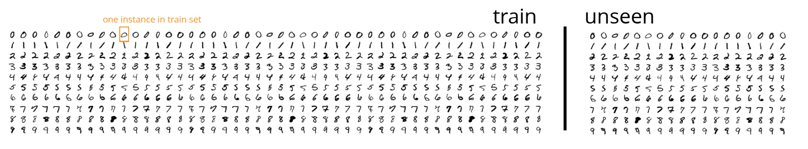And so, in our model, we are mapping input to output, so in the example above, our model takes as input a handrwritten digit and outputs what digit has been written, i.e $f:$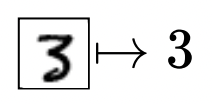. We also have a loss function, that takes as input the real data point and the predicted data point and measures the error in our prediction, i.e $\ell:(y,\hat{y})\rightarrow\mathbb{R}$. For example, this loss function is $\ell (y,\hat{y})=(y-\hat{y})^2$ for linear regression, and $\ell (y,\hat{y})=\mathbb{I}(y\neq \hat{y})$ for classification (or cross entropy). And finally, we train our model to find the best parameters such that the average loss for all data points is minimized, i.e $J=\frac{1}{|\mathcal{D}_{\text{train}}|}\sum_{x,y\in \mathcal{D}_{\text{train}}}\ell (y,f(x))$. Note we often drop the scaling factor in front of the sum since it won't affect the optimization.
But what we really care about is generalization error, that is, the expected loss we see when sampling data points from our distribution, i.e $\mathbb{E}_{(x,y)\sim p}\ell(y,f(x))$. In other words, we want to see how our model generalizes to unseen data Now, in practice, we can't usually measure this because we typically don't know what the true distribution looks like. Instead, we can estimate it by setting aside a portion of our given data, as shown in our example below:
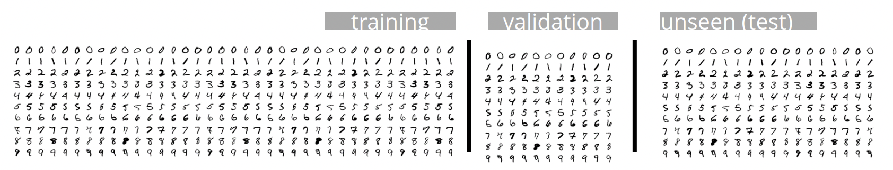So, if we want to tune the hyperparameters of our model, we can use a similar idea for picking the best hyperparameter. Ideally, we want to pick hyperparameters that give us the best generalization error, or test error. However, it would be a mistake to adjust our model based on the test data; this could lead to overfitting to our test data, which means the performance on the test data is no longer an unbiased estimate of generalization error. So we can set aside another subset of our dataset for doing model selection. This is called the validation set.
So in total, the training set is for selecting parameters/weights, the validation set is for selecting hyperparameters, and the test set is for assessing how well our model performs. Below is some code that plots the validation error and the test error for the same housing dataset:
#Split into train, validation and test (8:1:1)
n_test, n_valid = num_instances // 10, num_instances // 10
inds = np.random.permutation(num_instances)
x_test, y_test = x[inds[:n_test]], y[inds[:n_test]]
x_valid, y_valid = x[inds[n_test:n_test+n_valid]], y[inds[n_test:n_test+n_valid]]
x_train, y_train = x[inds[n_test+n_valid:]], y[inds[n_test+n_valid:]]
#Plot the mean square error for different K values stored in K_list
K_list = range(1,30)
err_train, err_test, err_valid = [], [], []
for i, K in enumerate(K_list):
model = neighbors.KNeighborsRegressor(n_neighbors=K)
model = model.fit(x_train, y_train)
err_test.append(loss(model.predict(x_test), y_test))
err_valid.append(loss(model.predict(x_valid), y_valid))
err_train.append(loss(model.predict(x_train), y_train))
plt.plot(K_list, err_test, label='test')
plt.plot(K_list, err_valid, label='validation')
plt.legend()
plt.xlabel('hyper parameter')
plt.ylabel('mean squared error')
plt.show()
Note that once we pick the best hyperparameters for our model we can use both train $+$ validation sets to retrain the model. This is only practical if training can be done efficiently. In the figure above you can notice that validation error can be slightly different from the test error (simply re-run the code). This difference is due to the size of both validation and test sets.
We can get a better estimate of the validation error and its variance using cross validation: the idea is to repeat the training-validation using a different portion of the data. Then we can use the mean and the variance of the training and validation error over these repetitions. For this, it is best to use non-overlapping validation sets: for example use, first we set aside $10\%$ of the data for test. Then, in a 5-fold cross-validation, we would divide the remaining $90\%$ to 5 subsets. At each iteration of cross-validation, one of these 5 subsets will be used for validation and the remaining 4 will be used for training. Once we pick the best model using mean and variance of the validation error, we can train the model using the entire $90\%$ of the data. Finally, we report the performance on the test set.
Below shows an example with our handwritten digits. We generally divide the (training $+$ validation) into $L$ parts, and use one part for validation, and the remaining $L-1$ parts for training.
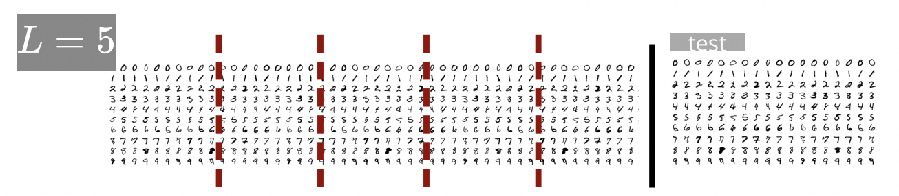And then you perform $L-1$ more runs so that we can us validation for each of the $L$ parts, as shown below:
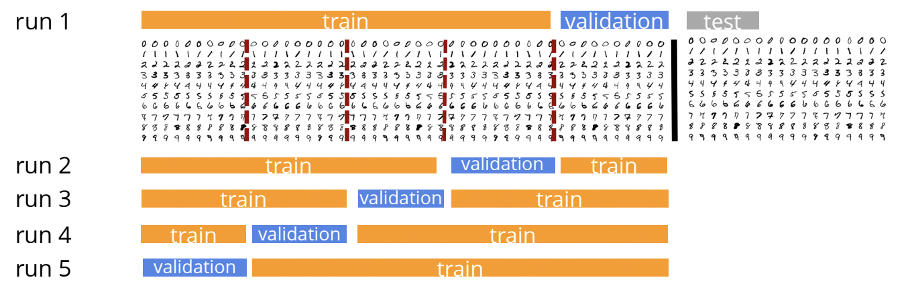And then finally, we select our hyperparameter based on the average validation error and its variance. That is, for run $i$, you will get error $e_i$, and for $L$ total runs, your average error is $\overline{e}=\frac 1L \sum_{i=1}^L e_i$. Below we implement a method that returns train and validation split for cross-validation.
def cross_validate(n, n_folds=10):
#get the number of data samples in each split
n_val = n // n_folds
inds = np.random.permutation(n)
inds = []
for f in range(n_folds):
tr_inds = []
#get the validation indexes
val_inds = list(range(f * n_val, (f+1)*n_val))
#get the train indexes
if f > 0:
tr_inds = list(range(f*n_val))
if f < n_folds - 1:
tr_inds = tr_inds + list(range((f+1)*n_val, n))
#The yield statement suspends function’s execution and sends a value back to the caller
#but retains enough state information to enable function to resume where it is left off
yield tr_inds, val_inds
Let's first set aside the test data
inds = np.random.permutation(num_instances)
#seperate the test data
x_test, y_test = x[inds[:n_test]], y[inds[:n_test]]
x_rest, y_rest = x[inds[n_test:]], y[inds[n_test:]]
#rest for training and validation
n_rest = num_instances - n_test
Then we use cross-validation to find the best set of hyperparameters
num_folds = 10
err_test, err_valid = np.zeros(len(K_list)), np.zeros((len(K_list), num_folds))
for i, K in enumerate(K_list):
#Find the validation errors for num_folds splits for a given K
for f, (tr, val) in enumerate(cross_validate(n_rest, num_folds)):
model = neighbors.KNeighborsRegressor(n_neighbors=K)
model = model.fit(x_rest[tr], y_rest[tr])
err_valid[i, f] = loss(y_rest[val], model.predict(x_rest[val]))
#this is the part that we don't do in a usual setup. We don't touch the test set until the very end.
model = neighbors.KNeighborsRegressor(n_neighbors=K)
model = model.fit(x_rest, y_rest)
err_test[i]= loss(y_test, model.predict(x_test))
plt.plot(K_list, err_test, label='test')
plt.errorbar(K_list, np.mean(err_valid, axis=1), np.std(err_valid, axis=1), label='validation')
plt.legend()
plt.xlabel('hyper parameter')
plt.ylabel('mean squared error')
plt.show()
Note that the test error is plotted only to show its agreement with the validation error; in practice we don't look at the test set for hyperparameter tunning
A simple rule of thumb for picking the best model using cross-validation is to pick the simplest model that is within one standard deviation of the best performing model. This is because these model within this standard deviation perform more or less optimally, and we assume the simplest models generalize better.
And finally, once we have our hyperparameters, its best to train your model again on the full training set (all $L$ pieces) to make sure your parameters are indeed optimal. Then we can evaulate on our test set.
Performance Metrics
Let's start with metrics related to classification. If you have a classfier that outputs True or False, this opens the door to two types of error: False Positive (Type I Error), or False Negative (Type II Error). For example, a type I error would be if a patient does not have a disease but received a positive diagnostic. A type II error would be if the patient did have the disease but was not deteced.
We can summarize these results in a confusion matrix, as shown below. RP stands for results positive (which is the sum of true positives and false positives), RN stands for results negative (sum of true and false negatives).
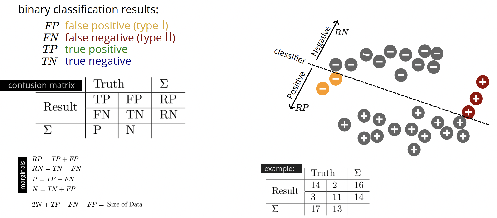Below are some common metrics we can use report from the confusion matrix:
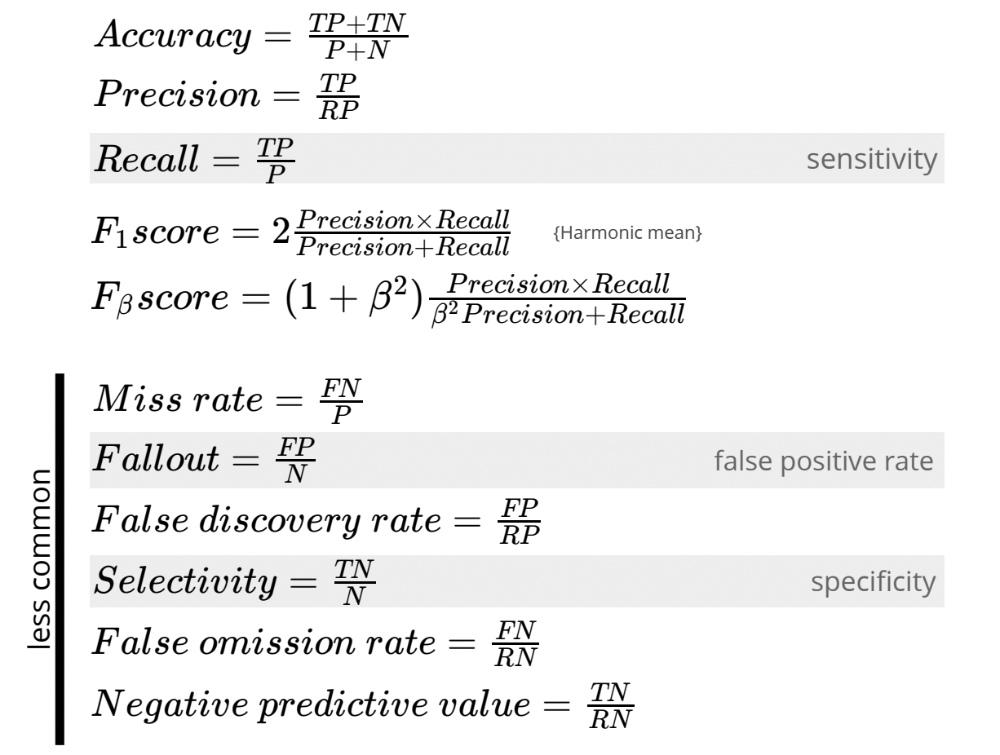Let's calculate the confusion matrix of our housing dataset:
from sklearn import tree, model_selection
x, y = datasets.load_iris(return_X_y=True)
x_train, x_test, y_train, y_test = model_selection.train_test_split(x, y, test_size=0.2) # this is similar to our manual split above
yh_test = tree.DecisionTreeClassifier().fit(x_train, y_train).predict(x_test)
def confusion_matrix(y, yh):
n_classes = np.max(y) + 1
c_matrix = np.zeros((n_classes, n_classes))
for c1 in range(n_classes):
for c2 in range(n_classes):
#(y==c1)*(yh==c2) is 1 when both conditions are true or 0
c_matrix[c1, c2] = np.sum((y==c1)*(yh==c2))
return c_matrix
cmat = confusion_matrix(y_test, yh_test)
print(cmat)
print(f'accuracy: {np.sum(np.diag(cmat))/np.sum(cmat)}')
There is often a tradeoff between precision and recall. If we have a classifier that is predicting two different classes, we need a decision boundary that we can use to separate them. We want some way to evaluate the class scores of probabilities in a way that is independent of where we put this boundary of threshold.
How can we do this, because it seems our choice of threshold has an impact. This is because if we make a sensitive threshold to the point where we have no false positives, we may not have any true positives at all. Similalrly, if we place the threshold such that there are no false negatives, we may also not have any true negatives as well.
We can analyze this by plotting a Receiver Operating Charactistic (ROC) cuvre. What we are doing is plotting the false positive rate vs the true positive rate for different threshold values:
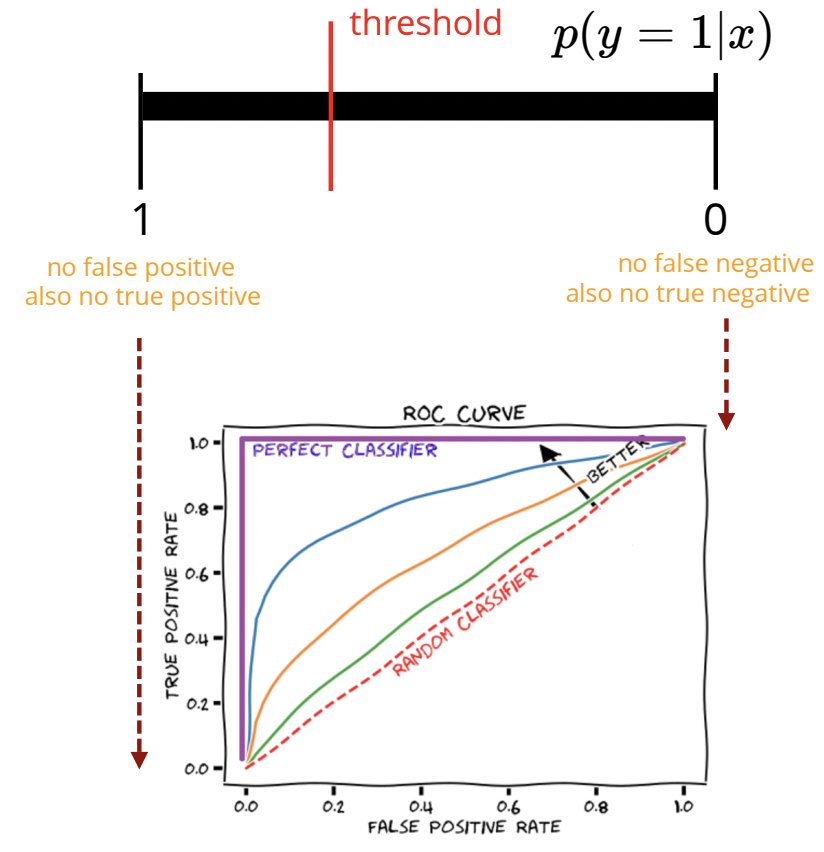Notice the positions of the ideal classifier (true positive rate is $1$), and a random classifier, which classifies our data randomly. Of course, we would want to maximize the Area Under the Curve (AUC) to get a better classifier, and we can approximate this by using a sum of boxes:
$$AUC=\sum_t TPR(t)\left[FPR(t)-FPR(t-1)\right]$$Where $TPR(t)=TP(t)/P$, i.e the recall value for different sensitivity thresholds $t$, and $FPR(t)=FP(t)/N$, i.e the fallout value, the false alarm or type I error rate, at different sensitivity thresholds $t$.
Similar to ROC curves, you can also plot Precision-Recall Curves, which is simply the precision value plotted over the recall values for different threshold sensitivity values. These are far less common, but quite helpful when especially when your data is imbalanced or lop-sided (e.g you have far more positives than negatives). Especially useful for this case since ROC curves are insensitive to class imbalance.
Note you can also generalize the confusion matrix to a $C\times C$ size, where $C$ is the number of classifiers you have. Each entry shows the input data point (row), and what it was classified as (column). Of course, the aim is to maximize the diagonal entries (i.e you have correct classification). An example of classifying different objects in images is shown below:
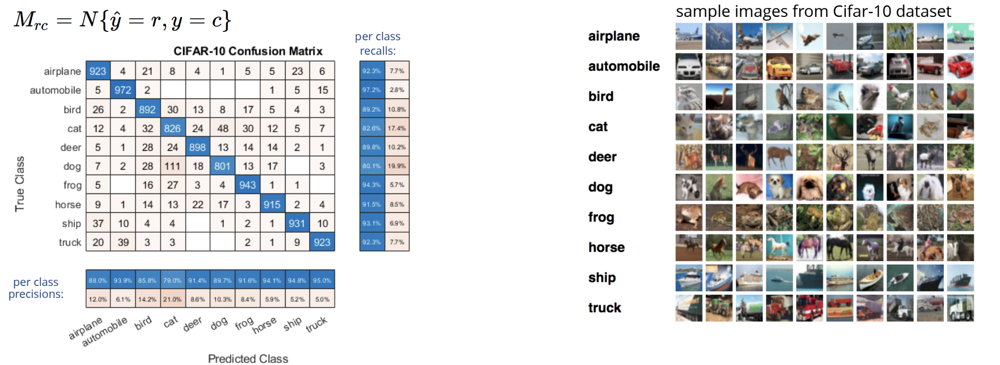Indeed, the classifier's accuracy is the sum of the diagonal elements divided by the sum of all entries of the matrix. Also notice the recall values computed per row (diagonal element divided by sum of all row elements), and also the precision values computed per column (diagonal element divided by sum of all column elements).
In the real world, it's important to be cognizant of the distribution of our input training data, since that's all your model will have to learn from. As such, any demographic or phenotypic gaps in your training data can introduce bias in your model. Below shows some examples of this concerning effect.
- Amazon's hiring algorithm decides not to invite women to interview. Read it Here.
- Google's online ad algorithm decides to show high-income jobs to men much more often than to women. Read it Here.
- A machine learning algorithm denies you credit based on race or gender. Read it Here.
- Health care algorithm offers less care to black patients. Read it Here and Here.
- Florida risk score algorithm used in courts assign higher risk to black defendants. Read it Here.
A common approach to solve this problem is to separate your testing data by these critical demographic markers (race, gender, etc.) and evaulate the performance of your model on each of these test sets individually, to ensure a similar quality of performance for each demographic.
Learning algorithms make implicit assumptions, for exampe, we are often biased towards simplest explanations of our data (Occam's Razor), and these sorts of assumptions are known as learning or inductive bias. It typically makes sense of learning algorithms to be biased, as the world is not random, and there are regularities that often appear, so induction is possible.
A common concept in machine learning is the curse of dimensionality, which refers to the fact that learning in high dimensions can be difficult, since the volume of space grows exponentially fast with the dimension. For example, suppose our data is uniformly distributed in some range, say $x\in [0,3]^D$, and we predict the label by counting labels in the same unit space. And so, to have at least one example per unit, we need $3^D$ training examples, and for $D=180$, we need more training examples than the number of particles in the universe.
Moreover, as you increase your dimensions, the distance between your data points becomes skewed and their distances will becomes smaller to the point where they are indistinguishable.
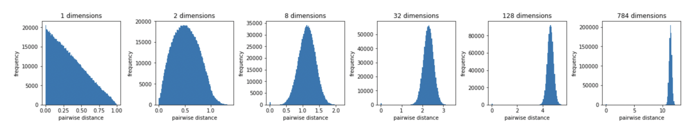A geometrical example below shows why the points become much closer together, because at higher dimensions, the volumes shrinks to the corners.
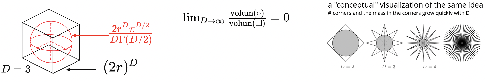Now, this is just an example for random data points, but in practice, we can still work in higher dimensions for real-word datasets, since these are not usually distributed uniformly and randomly. Because of this, the data can be thought of as existing on a lower dimension manifold, known as the manifold hypothesis.
Below is one such example where we have $64\times 64$ pixel image ($D=$number of pixels, $64\times 64$) of a hand that is either open, or rotated at the wrist. And thus, since these images are not random and be described by these two descriptors, we can say that the dataset lies on a $D=2$ (for finger extension and wrist rotated).
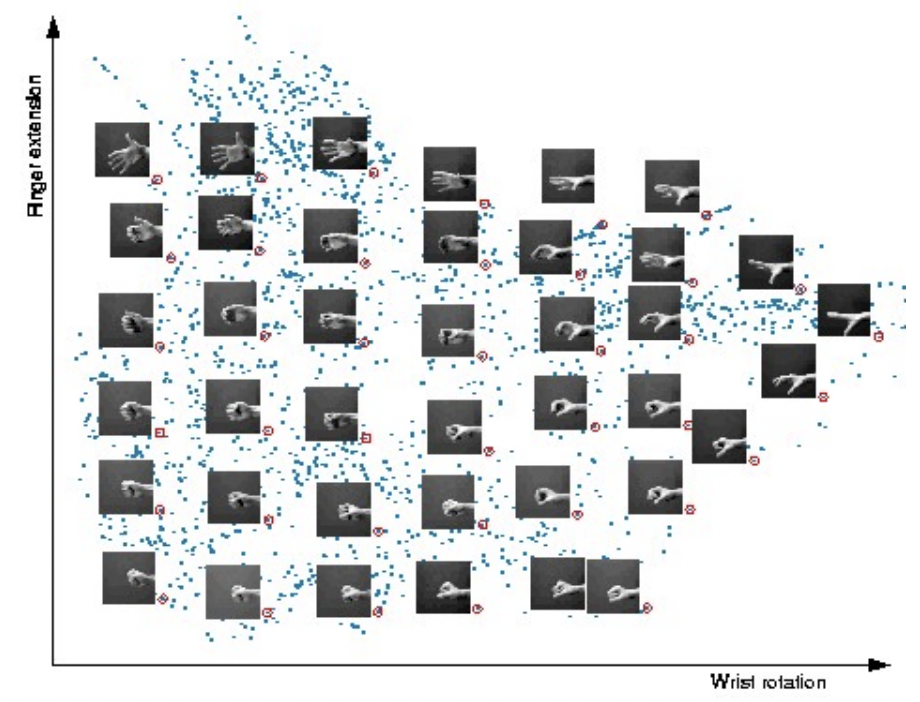Lastly, there is the concept of the No Free Lunch Theorem, which asserts that when the performance of all optimization methods is averaged across all conceivable problems, they all perform equally well. It indicates that no one optimum optimization algorithm exists.